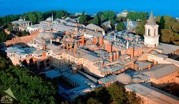

Hacı Bektaş Veli Cami
Ankara Hacı Bektaş Veli Camii, Anadolu’nun köklü tasavvuf geleneğini yaşatan en önemli mekânlardan biridir. Adını, 13. yüzyılda yaşamış büyük Türk mutasavvıfı Hacı Bektaş Veli’den alan bu cami; mimarisi, manevi atmosferi ve kültürel değeriyle dikkat çeker. Geleneksel Türk-İslam mimarisinin izlerini taşıyan yapısı, sade ama etkileyici bir estetik sunar. İç mekânı huzur verici bir sadelikle düzenlenmiş olup, ibadet edenlere dingin bir ortam sağlar. Aynı zamanda bir kültürel buluşma noktası olan cami, çevresindeki sosyal alanlarla birlikte ziyaretçilere hem dini hem de kültürel bir deneyim yaşatır. Hacı Bektaş Veli’nin hoşgörü, sevgi ve birlik mesajlarını yaşatan bu cami, Ankara’da manevi değerlerin canlı tutulduğu özel bir durak niteliğindedir.
Topkapı Sarayı
Topkapı Sarayı, İstanbul’un tarihi yarımadasında; Marmara Denizi, Haliç ve Boğaziçi’ni gören muhteşem bir konumda yer alır. Osmanlı Devleti’nin yaklaşık 400 yıl boyunca (1478–1856) idare merkezi ve padişahların resmi ikametgâhı olarak kullanılmıştır.
Sarayı, Fatih Sultan Mehmet 1460 yılında yaptırmaya başlamış ve 1478’de tamamlatmıştır. O dönemde Osmanlı’nın siyasî, idarî ve kültürel merkezi haline gelmiştir. Topkapı Sarayı; idare, eğitim, din, sanat ve gündelik yaşamın iç içe geçtiği bir yapılar bütünüdür.

Efes Antik Kenti
Efes Antik Kenti, İzmir’in Selçuk ilçesi yakınlarında yer alan, tarih boyunca birçok uygarlığa ev sahipliği yapmış önemli bir antik şehirdir. MÖ 6. yüzyılda kurulan Efes, Helenistik ve Roma dönemlerinde büyük bir ticaret, kültür ve inanç merkezi hâline gelmiştir. Kentin en ünlü yapılarından biri, antik dünyanın yedi harikasından biri sayılan Artemis Tapınağı’dır. Ayrıca Celsus Kütüphanesi, Büyük Tiyatro ve Kuretler Caddesi gibi yapılar, dönemin mimari ve mühendislik başarısını yansıtır. Efes, aynı zamanda Azize Meryem’in son yıllarını geçirdiği yer olarak da dini açıdan büyük bir öneme sahiptir. Günümüzde UNESCO Dünya Mirası Listesi’nde yer alan Efes, geçmişin izlerini bugüne taşıyan büyüleyici bir açık hava müzesidir. Tarihi atmosferi, taş sokakları ve görkemli kalıntılarıyla Efes, ziyaretçilerine hem antik çağın görkemini hem de Anadolu’nun kültürel derinliğini hissettiren eşsiz bir yerdir.

Laodikeia Antik Kenti
Laodikeia Antik Kenti, Denizli’nin kuzeyinde, günümüz Pamukkale ilçesi yakınlarında yer alan önemli bir antik yerleşimdir. MÖ 3. yüzyılda Seleukos Kralı II. Antiokhos tarafından kurulan kent, adını karısı Laodike’den almıştır. Roma döneminde büyük bir ticaret, sanat ve inanç merkezi hâline gelen Laodikeia, özellikle tekstil ve mermer işçiliğiyle ünlüydü. Şehrin en dikkat çekici yapıları arasında tiyatrolar, stadyum, tapınaklar, agoralar ve sütunlu caddeler bulunur. Ayrıca erken dönem Hristiyanlığı açısından da büyük önem taşır; Laodikeia, İncil’de adı geçen yedi kiliseden biridir. Günümüzde UNESCO Dünya Mirası Geçici Listesi’nde yer alan Laodikeia, Anadolu’nun antik dönem zenginliğini gözler önüne seren açık hava müzesi niteliğindedir. Tarihi kalıntıları, geniş yerleşim alanı ve görkemli mimarisiyle ziyaretçilerine geçmişle iç içe bir keşif deneyimi sunar.